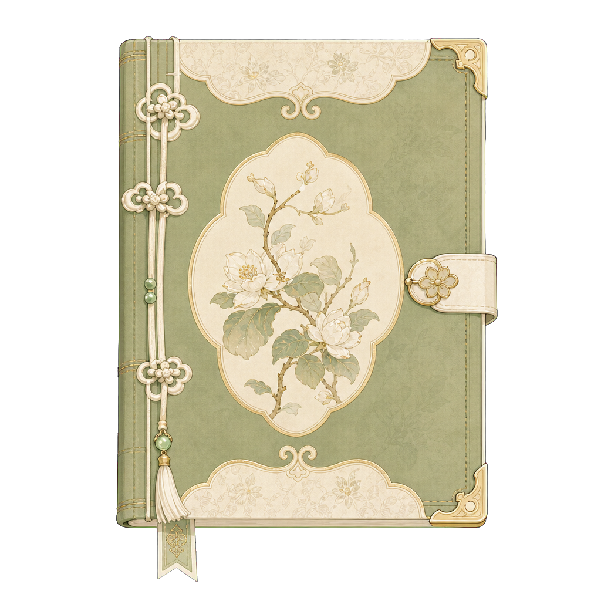
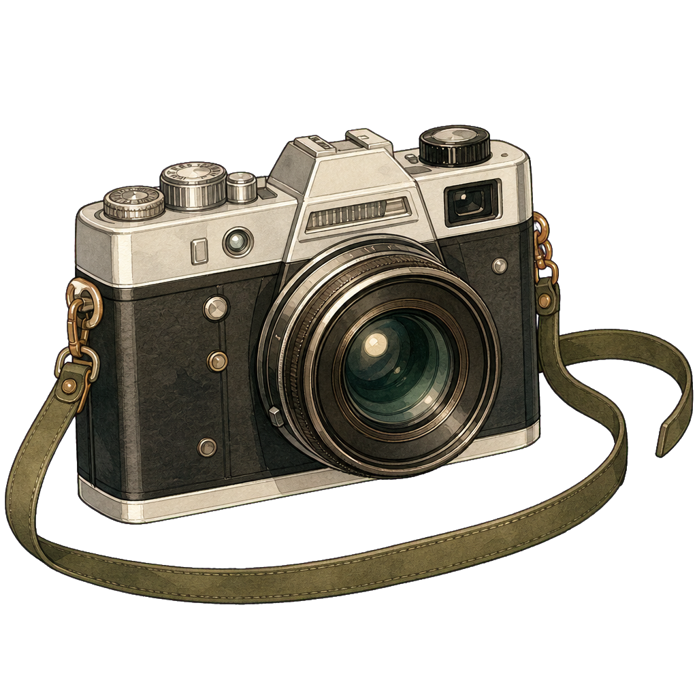
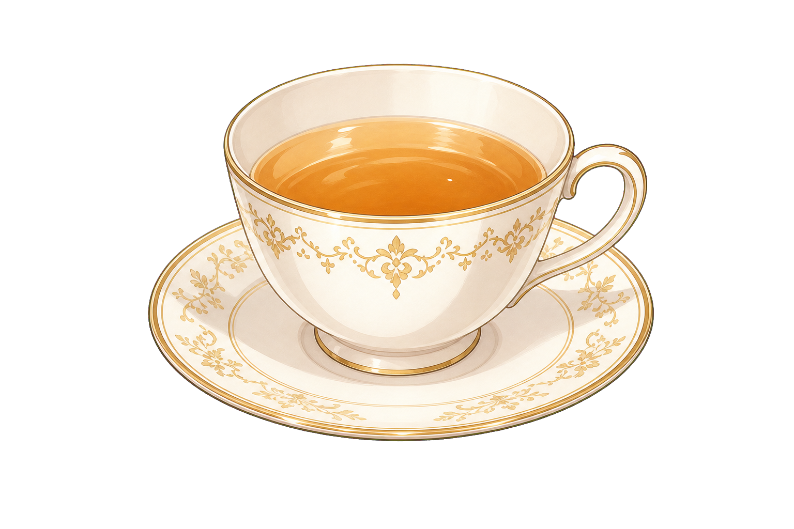
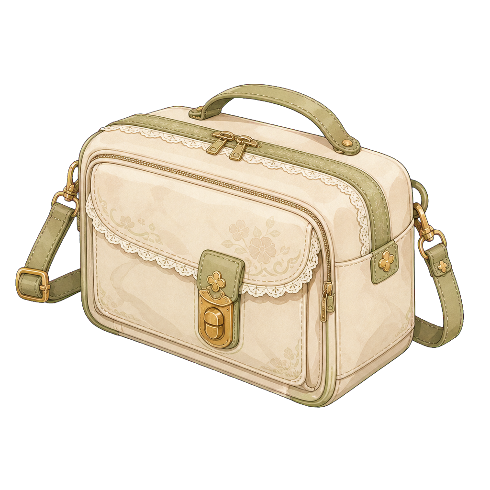
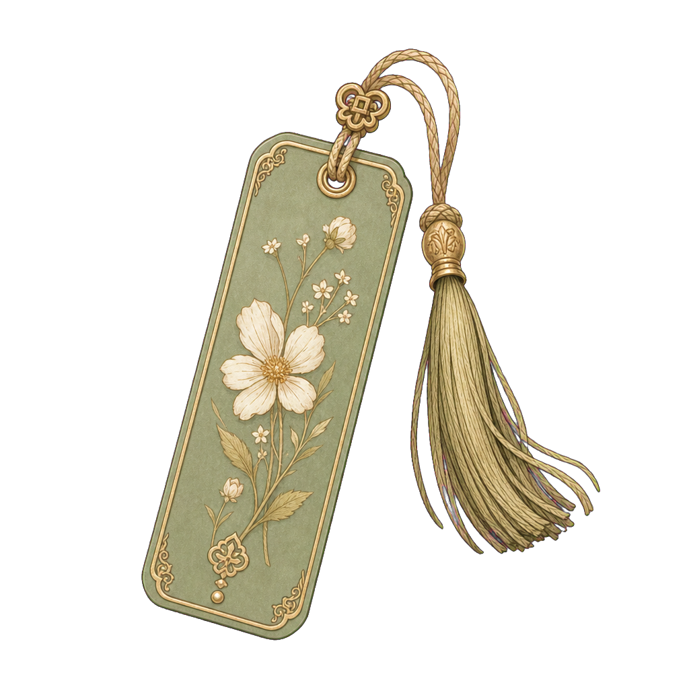

Clothing


Journal-Style Character Sheet
Classic Lolita | Planner | Archivist | Gentle Older Sister | A person who protects dreams through order.


Then let us give this dream a date.I will prepare the tea, and the way back.
Asset Expansion
The page uses reference crops and stable placeholders first. Finished transparent PNG assets will replace their slots automatically.








Workflow
assets/characters/qingyou
She learns to use tools for repeated work while keeping judgment, care, and relationships in her own hands.